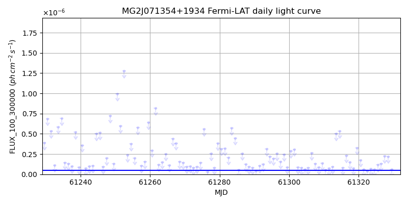
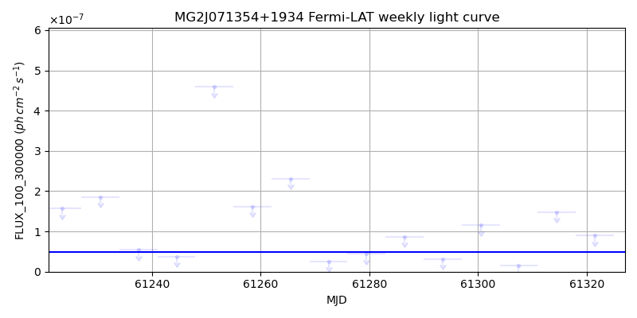
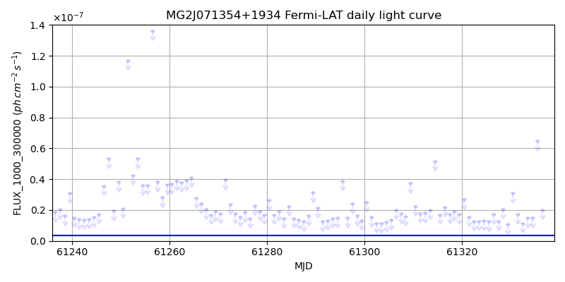
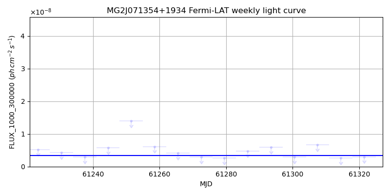

LAT Lightcurve site: https://fermi.gsfc.nasa.gov/ssc/data/access/lat/msl_lc/source/MG2_J071354p1934
NED: Query
Time of last update of this page: UT: 2026-10-17 15:18 (MJD: 61330.638)
| Property | Value |
|---|---|
| R.A. | 7:13:55.68 |
| Dec. | 19:34:58.8 |
| z | 0.540 |
| 3FGL SpectrumType | LogParabola |
| 3FGL PL Index | |
| 3FGL Flux_100_300000 | 4.96e-08 1 / (s cm2) |
| 3FGL Flux_1000_300000 | 3.41e-09 1 / (s cm2) |
| 3FGL Flux >200 GeV | 8.62e-13 1 / (s cm2) |
| 3FGL Extrap. Crab >200 GeV | 0.00 |
| 3FGL Flux After EBL Absorption >200GeV | 1.34e-13 1 / (s cm2) |
| 3FGL EBL Crab Fraction >200GeV | 0.00 |

| MJD | dMJD | Flux | dFlux | Frac3FGL | FracCrab>200GeV | EBLFracCrab>200GeV |
|---|---|---|---|---|---|---|
| 61325.50 | 0.50 | 1.17e-07 | 0.00e+00 | 0.00 | 0.00 | 0.00 |
| 61326.50 | 0.50 | 1.30e-07 | 0.00e+00 | 0.00 | 0.00 | 0.00 |
| 61327.50 | 0.50 | 2.25e-07 | 0.00e+00 | 0.00 | 0.00 | 0.00 |
| 61328.50 | 0.50 | 2.21e-07 | 0.00e+00 | 0.00 | 0.00 | 0.00 |
| 61329.50 | 0.50 | 6.02e-08 | 0.00e+00 | 0.00 | 0.00 | 0.00 |

| MJD | dMJD | Flux | dFlux | Frac3FGL | FracCrab>200GeV | EBLFracCrab>200GeV |
|---|---|---|---|---|---|---|
| 61293.50 | 3.50 | 3.16e-08 | 0.00e+00 | 0.00 | 0.00 | 0.00 |
| 61300.50 | 3.50 | 1.15e-07 | 0.00e+00 | 0.00 | 0.00 | 0.00 |
| 61307.50 | 3.50 | 1.54e-08 | 0.00e+00 | 0.00 | 0.00 | 0.00 |
| 61314.50 | 3.50 | 1.48e-07 | 0.00e+00 | 0.00 | 0.00 | 0.00 |
| 61321.50 | 3.50 | 8.94e-08 | 0.00e+00 | 0.00 | 0.00 | 0.00 |

| MJD | dMJD | Flux | dFlux | Frac3FGL | FracCrab>200GeV | EBLFracCrab>200GeV |
|---|---|---|---|---|---|---|
| 61325.50 | 0.50 | 1.26e-08 | 0.00e+00 | 0.00 | 0.00 | 0.00 |
| 61326.50 | 0.50 | 1.70e-08 | 0.00e+00 | 0.00 | 0.00 | 0.00 |
| 61327.50 | 0.50 | 1.28e-08 | 0.00e+00 | 0.00 | 0.00 | 0.00 |
| 61328.50 | 0.50 | 2.06e-08 | 0.00e+00 | 0.00 | 0.00 | 0.00 |
| 61329.50 | 0.50 | 1.08e-08 | 0.00e+00 | 0.00 | 0.00 | 0.00 |

| MJD | dMJD | Flux | dFlux | Frac3FGL | FracCrab>200GeV | EBLFracCrab>200GeV |
|---|---|---|---|---|---|---|
| 61293.50 | 3.50 | 5.88e-09 | 0.00e+00 | 0.00 | 0.00 | 0.00 |
| 61300.50 | 3.50 | 2.95e-09 | 0.00e+00 | 0.00 | 0.00 | 0.00 |
| 61307.50 | 3.50 | 6.66e-09 | 0.00e+00 | 0.00 | 0.00 | 0.00 |
| 61314.50 | 3.50 | 2.63e-09 | 0.00e+00 | 0.00 | 0.00 | 0.00 |
| 61321.50 | 3.50 | 3.01e-09 | 0.00e+00 | 0.00 | 0.00 | 0.00 |
--------------------------------------------------------- Using user-supplied coords: 7:13:55.68 19:34:58.8 2000 --------------------------------------------------------- FLWO UT night of: 2026-10-18 Local Sid. @ Midnight: 01:23 Sunset (-15.0) (local, UT): 18:56 01:56 Sunrise (-15.0) (local, UT): 05:22 12:22 Moonrise (local, UT): Moonset (local, UT): 22:59 05:59 Moon phase: 0.47 --------------------------------------------------------- AzTime LSID UT Obj_el Obj_az Mn_el Mn_az Sep. --------------------------------------------------------- 18:56 20:18 01:56 -36.6 18.6 30.5 195.3 173.3 19:26 20:48 02:26 -34.1 26.8 28.5 202.5 173.3 19:56 21:18 02:56 -30.9 34.3 25.9 209.3 173.3 20:26 21:48 03:26 -27.0 41.0 22.6 215.6 173.4 20:56 22:19 03:56 -22.5 47.1 18.8 221.3 173.4 21:26 22:49 04:26 -17.6 52.5 14.5 226.6 173.4 21:56 23:19 04:56 -12.4 57.5 9.9 231.4 173.5 22:26 23:49 05:26 -6.8 62.0 5.0 235.7 173.5 22:56 00:19 05:56 -0.4 66.1 0.2 239.8 173.5 23:26 00:49 06:26 5.0 70.0 -5.5 243.5 173.5 23:56 01:19 06:56 11.0 73.7 -11.3 247.0 173.5 00:26 01:49 07:26 17.2 77.2 -17.0 250.4 173.5 00:56 02:19 07:56 23.4 80.7 -22.8 253.6 173.4 01:26 02:49 08:26 29.8 84.3 -28.7 256.7 173.3 01:56 03:19 08:56 36.2 87.9 -34.7 259.8 173.2 02:26 03:49 09:26 42.6 91.9 -40.7 263.0 173.1 02:56 04:20 09:56 48.9 96.3 -46.8 266.4 173.0 03:26 04:50 10:26 55.3 101.5 -52.8 270.1 172.9 03:56 05:20 10:56 61.4 108.1 -58.9 274.3 172.7 04:26 05:50 11:26 67.3 117.3 -64.9 279.6 172.5 04:56 06:20 11:56 72.7 131.1 -70.8 287.0 172.3 05:22 06:46 12:22 76.2 149.9 -75.7 297.1 172.1 --------------------------------------------------------- Dark hours >55 deg.: 1.95 srcstart (UT): 2026-10-18 10:24 srcend (UT): 2026-10-18 12:22